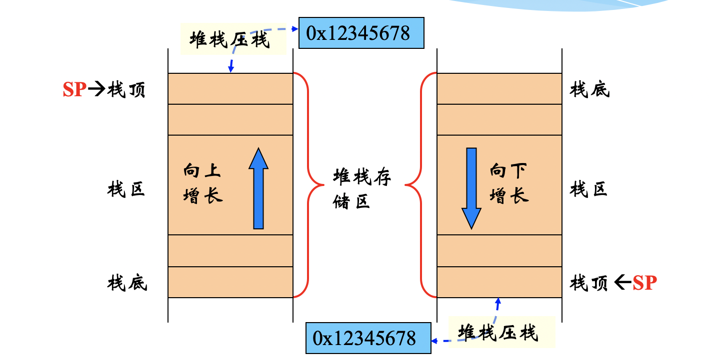
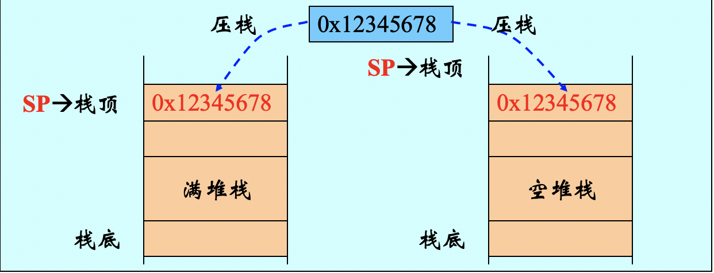
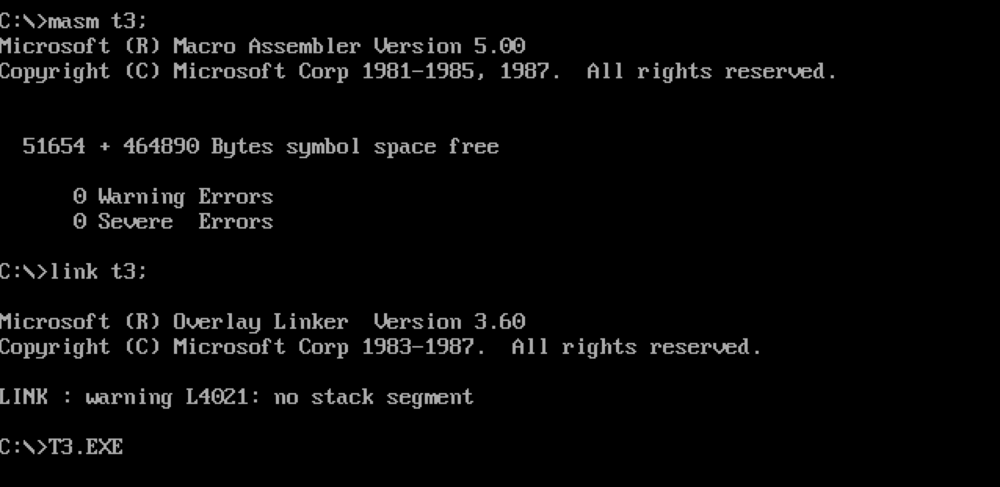
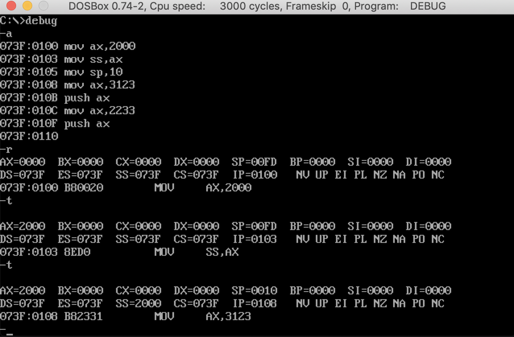
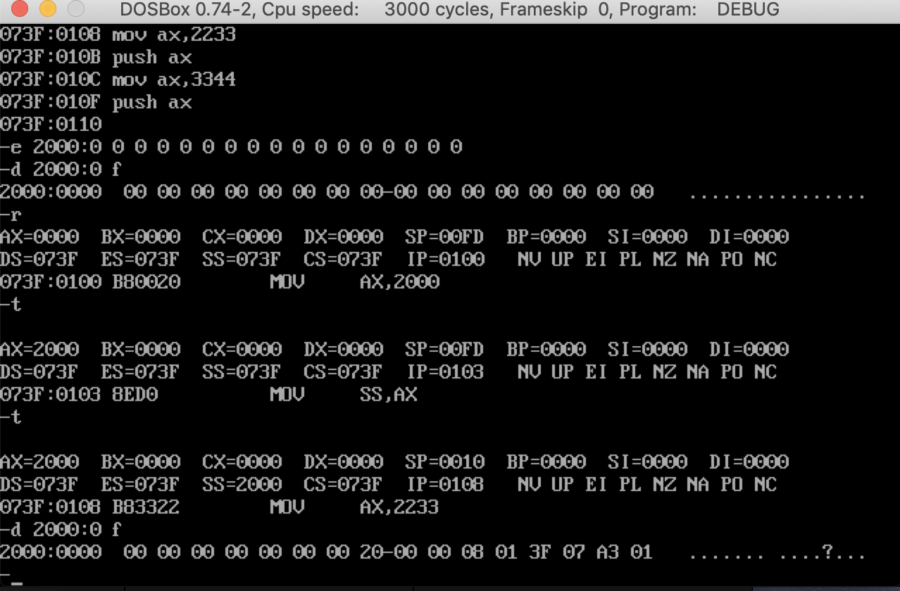
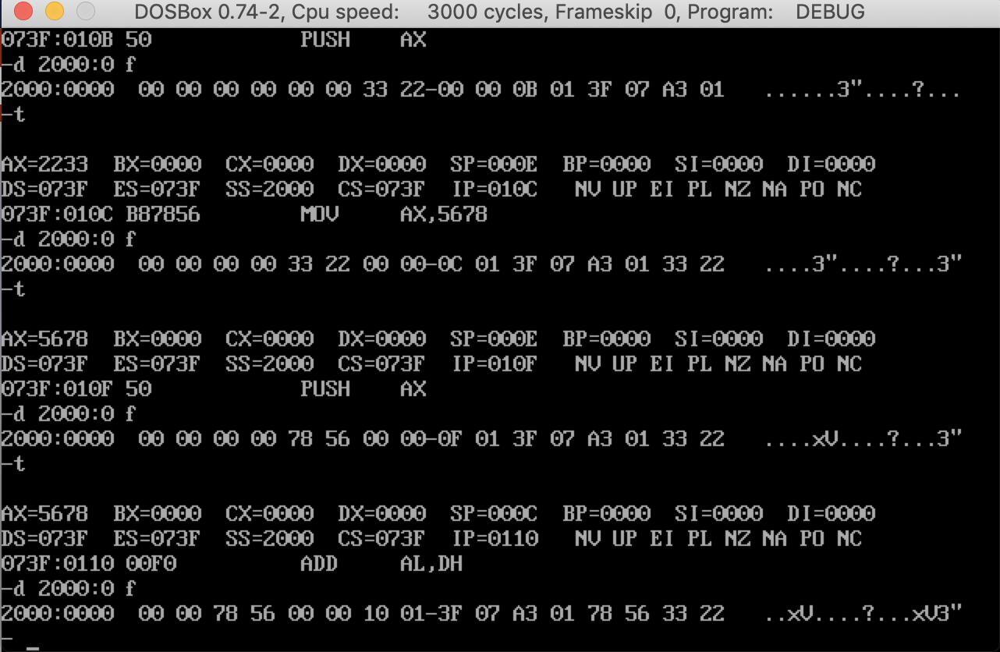
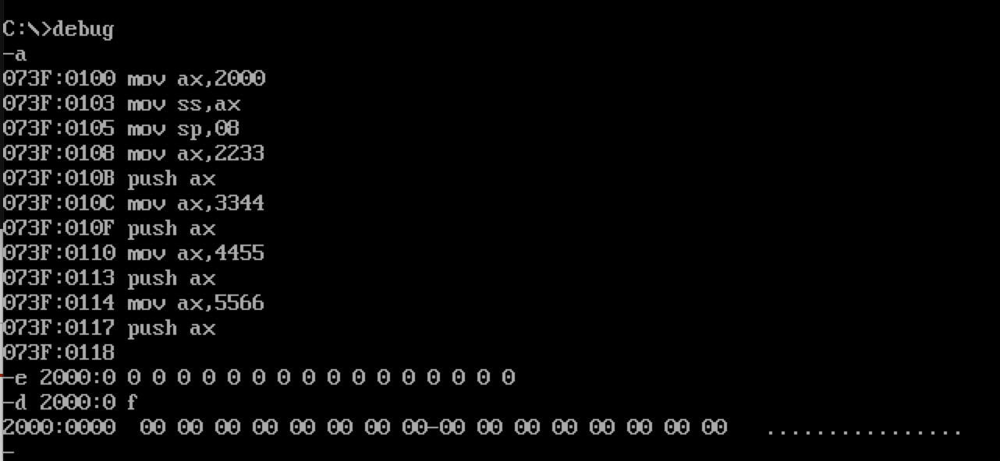
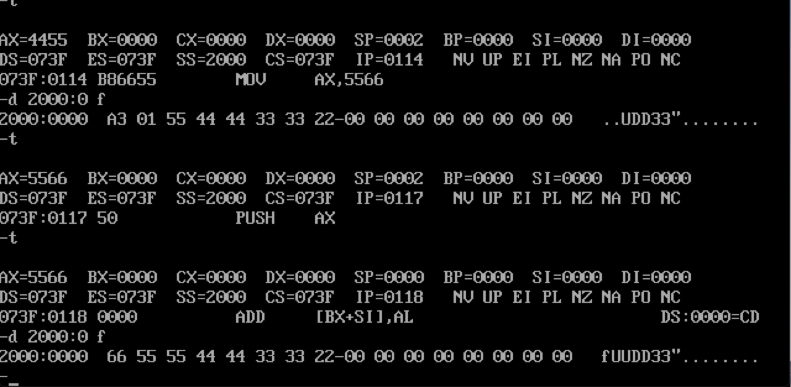
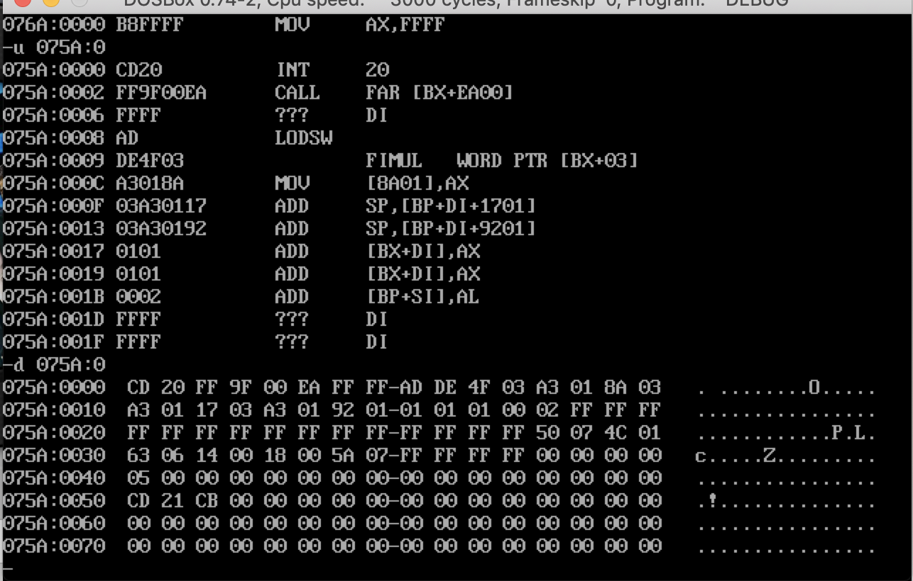

第二部分:汇编结构
Abstract
汇编语言的结构
寄存器和内存之间
汇编语言是由不同的段构成的，这些段的功能各异不过主要分为
指令和数据两部分。运行汇编代码的意思就是将汇编代码加载到内存中，通过寄存器完成内存和CPU之间的交互。从这个角度看寄存器就是汇编的一种手段。但是寄存器和内存实际上是两个完全不一样的硬件设备，暂时先不考虑性能和速率差的问题。指令和数据到底是如何在不同的存储单元之间传递的。
字节存储和字存储就是两种解决办法，在8086中寄存器是16位的(16位为一字)，而存储器的最小存储单元是8位也就是一个字节，所以如果在一些读写中需要用到字存储而不是字节存储的话，就需要两块连续的内存单元才能完成数据的传输，而且是高地址存放字的高位字节，低地址存放字的低位字节。
要读写一块内存单元的时候，必须先要给出这个内存单元的地址。在实验1中我们知道了CPU使用段地址+偏移地址的方式来进行寻址。而实现这些功能的就是一些具有特殊功能的寄存器。这里提到的是最简单的也最常使用的两种类型:
CS+IP————在任意时刻CPU将CS:IP指向的内容当做指令执行。DS+[idata]————DS通常用来存放需要访问的数据的段地址。
这里主要介绍汇编语言的结构，对应到寄存器和内存寻址的方式后面会讲。
数据段
将一段内存当做数据段，是我们在编程的时候的一种安排，可以在具体操作的时候，用ds存放数据的段地址，再根据相关指令访问数据段中的具体单元。
代码段
从硬件角度讲，CPU只认被CS:IP指向的内存单元中的内容为指令。要让CPU执行我们放在代码段的指令，必须要将CS:IP指向所定义的代码段中的第一条指令的首地址。
栈段
栈是一种先进后出的数据结构，这是最基本的栈的概念。这里讲到的栈指的是内存区域。从操作系统的角度讲一个线程需要分配一个栈(stack)。相对应的一个进程需要分配一个堆(heap)。栈的大小在分配的时候就已经确定好了，其作用主要是存放一些局部和确定的变量和数据。
关于栈也有两个寄存器:SS:SP。换句话讲CPU如何知道一段内存区域是不是栈？栈顶的段地址放在SS中，而偏移地址放在SP中。任意时刻，SS:SP指向栈顶元素。这是规定。
另外，上微机原理课的时候，老师讲到栈的分类:
- 向高地址生长的称为递增堆栈。
- 向地地址生长的称为递减堆栈。
地址延伸主要的影响就是内存中的大端寻址和小端寻址。

- 堆栈指针指向最后压入堆栈的有效数据项，叫做满堆栈。
- 堆栈指针指向下一个待压入数据的空位置，叫做空堆栈。

栈指令
在i386的指令集中，栈操作都是以字为单位的。
push执行过程
1. SP=SP-2;
2. 向`SP:SS`指向的内存字单元中送入数据;
pop执行过程
1. 从`SP:SS`指向的内存字单元中读取数据;
2. SP=SP+2;
段的概念
之前讨论过关于段这个概念。我认为，还是因为在编程的时候可以通过一个系统化的结构来统一汇编语言的实现逻辑。使得这些指令看上去便于管理和协调合作。至于其物理实现，其实就是CPU的寻址方式决定的。书本中有一段话特别经典，我摘抄如下:
1 | 比如我们将10000H~1001F安排为代码段，并在里面存储如下代码: |
多个段的统一
以前写的汇编都是单个段，并且主要是代码段。如果内存中的一段汇编代码需要包含多个数据段，代码段，栈段。该如何设计才能保证程序正常运行呢？
我们应该有一个概念，就是所谓和CPU对应的程序一定是CS:IP指向的内存地址。所以实际上这个问题是在问保证CS:IP正确指向程序的前提下，如何让数据段，栈段合理的加进来？
这里有个伪指令的概念，伪指令主要是为汇编器提供一些编译的前提信息比如从哪里开始执行代码，其他的段的起始地址在哪里。所以问题也就解决了。
- 如何保证
CS:IP指向代码段:end和end start- 如何定义一个段:
code segment和code ends- 如何将段寄存器和段相对应:
assume cs:code
汇编语言的编译、连接过程及其工具的使用
这部分详细见书上。
源程序组成
一个汇编程序的源程序由
汇编指令和伪指令构成。汇编指令指的是编译成为机器指令最终为CPU所执行的代码。伪指令没有相对应的机器指令，主要是由编译器来执行的指令。
编译、链接、执行
源程序经过编译成为可重定位文件，然后经过链接成为可执行文件。可执行文件是可以直接在操作系统中执行的。上述两种文件都属于ELF格式的文件，ELF是Linux下面的一种文件格式，具体的细节在后面的操作系统中会谈到，这里只是了解。
编程（edit）————>1.asm————>编译(masm)————>1.obj————>链接(link)————>1.exe————>加载(shell)————>内存中的程序————>运行(CPU)

工具进阶
debug -d
第一个实验中使用的debug工具，通过各种参数来对寄存器和内存进行读写。比如
d 段地址:偏移地址指令会列出指定内存单元中的内容。但是debug也是一个程序，而能定位内存地址的方式在8086中只有段寄存器可以做到,实际上debug就是通过将地址写入段寄存器中的方式来进行内存寻址。这个原理适用于所有的参数。
而使用的这个段寄存器正是DS寄存器。
根据这个原理，就可以通过修改寄存器来进阶使用这些命令，比如:-r ds,:1000,-d ds:0这段代码就表示查看从1000：0开始的内存空间中的内容。这里主要是认识到段寄存器DS的寻址功能，为之后的寻址方式打基础。
debug -p
在整个实验中，debug工具是经常要使用的。debug有两种用法，一种就是使用
a参数直接写入程序然后调试。还有一种就是直接调试exe文件。
第一种之前一直在用，第二种方式加载的过程有一些不一样，ds段寄存器中存放着该程序的段地址，因为偏移为零所以DS:0就是所加载程序的首地址。而加载进来的程序前256字节存放的是一段通信程序，所以真正的代码是在(DS+10H:0):0开始的。
每一段汇编指令都需要以mov ax,4c00H，int 21H结尾。在调试到int 21H的时候需要使用P命令执行。出现Program terminated normally程序正常退出。
实验2 用机器指令和汇编指令编程
这个实验很有意思，一共有两部分:
第一部分
使用
a将下面的汇编指令写入内存，然后使用T命令调试。如下:
1 | mov ax,2000 |
会发现在单步调试的时候，在
mov ss,ax之后的下一条指令竟然不是mov sp,10。但是查看寄存器的时候发现实际上这条执行已经被执行结束了。这是第一个现象。

第二部分
对上面的代码继续调试，如下：
会发现最开始对栈初始化之后，到执行到mov ss,ax指令的时候，查看原来的栈段内容竟然不再是零，且这些数字还都是和段寄存器相关的。

总结
下图是接下来的每一步后栈段中的内存变化。

可以看到的现象是:开始的时候栈中是没有数据的，栈桢SP指向2000:0010的位置。
在mov ss,ax和mov sp,10这两步执行结束之后，发现栈中已经有数据了，这里称为初始化。初始化的一共有6字节的数据:4个字节为CS:IP，还有两字节在栈底确定为01A3H。
之后的每一条栈操作的指令执行结束之后栈中的CS:IP值也会跟着变化，这说明每一次指令都有可能产生一次中断。
但是在栈底的01A3H一直没有变化估计应该是中断相关。在正式压栈操作的过程中发现最开始初始化过的那些数据并没有被压到栈底，这就意味着堆栈指针SP应该还在栈底，然后真正有数据项压栈的时候才会SP-=2操作。
小实验
就上面的三个现象，我在想仅仅是初始化的过程就已经占据了一大半栈空间，那如果将栈大小调整成为8字节的。那会出现什么情况？
我将mov sp,10改成mov sp,08；然后准备了8字节数据，所以栈会被压满。这时候我想看看现象。
这是一张初始化的图:

这是末尾压栈满了的图:

因为书上关于中断的详细讲解在第四部分，所以这里只是一个猜测。现象中随着栈不断被压满，之前初始化的那些数据都被挤出去了，具体去哪了不知道。那6个字节的数据到底有什么用也不知道。
猜测
不过可以知道的是初始化栈帧的时候会有参数压到栈里，参数有
CS:IP和中断向量号，其中CS:IP还在不断变化。而随着栈中的数据越来越多，栈中的这6个字节的参数被慢慢挤出。难道这6个字节不重要吗，或者说只是在初始化的时候用了一下？但是过程中这些参数一直也在变化，所以不可能不重要.不过这些数据之所以放到栈中的原因一定不是为了存储，否则就不会被随便挤出。
结合第一部分实验，mov sp,10是紧跟着前一条指令执行的，所以我能想到的唯一一个合理的解释就是:这些参数是在指令执行过程中直接使用的，而执行过程对shell屏蔽不可见，所以在栈中数据越来越多的时候这些参数还可以随意的移动位置并且被抛弃，这些参数是过程中使用的参数，而这个过程就是中断！至于中断到底是什么，到第4章再详细学习吧。
实验3 用编程、编译、连接、跟踪
最后一个实验查看PSP（就是加载开始前256字节）的内容。
使用u来查看汇编好像又和中断有关系。
